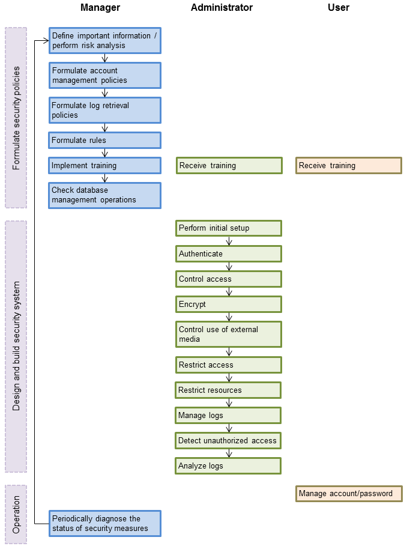

This section shows the flow of work when building a security environment and performing security operation in FUJITSU Enterprise Postgres.
When performing security operation, there are technical measures to be implemented to address security threats by equipping the system with security features, and manual work, such as the implementation of security guidelines, a training system, and the establishment of usage rules.
Figure 2.1 Security operation flow
